《协同开发培训-第三期-Git进阶2》 -- 陈卓
《Pro Git》在线书籍路径:
https://git-scm.com/book/zh/v2/
1 版本控制
什么是版本控制系统?
版本控制是一套系统，该系统按时间顺序记录某一个或者一系类文件的变更，让你可以查看其以前的特定版本。
本地版本控制

记录文件的每次更新，可以对每个版本做一个快照，或是记录补丁文件。
缺点:
- 只能在本地使用，且所有的数据都在本地，有很大的丢失风险。
集中式版本控制

包含一个服务器和多个客户端，多个客户端可以从服务器拉取文件。
优点: 解决了本地版本控制系统不能多人协作的问题
缺点:
- 所有的数据都在服务器中，若服务器宕机，则不能查协作或提交更改
- 有数据丢失风险
分布式版本控制

对于一个分布式版本控制系统来说，客户端并非仅仅是检出文件的最新快照，而是对代码仓库(repository)进行完整的镜像。这样一来，不管是那个服务器故障，任何一个客户端都可以使用自己的本地镜像来恢复服务器，每一次检出操作实际上都是对数据的一次完整备份。
2 Git基础使用
2.1 Git项目中的三大区域 (重要)
工作目录(Workspace)
暂存区 (Staging Area)
Git目录(仓库)(Repository) /rɪˈpɒzət(ə)ri/

- 工作目录: 对项目的某个版本独立提取出来的内容，如项目的源代码。
- 暂存区: 保存了下次将提交的文件列表信息。
- Git仓库: Git用来保存项目元数据和对象数据库的地方，这是Git中最重要的部分。
2.2 Git文件的状态 (重要)
- 未跟踪(Untracked)
- 已跟踪(tracked)
- 未修改(Unmodified)
- 已修改(Modified)
- 已暂存(Staged)
注意: 各种状态都是相对于Git仓库而言的

工作目录下的每一个文件都不外乎这两种状态: 已跟踪或未跟踪。已跟踪的文件是指那些被纳入了版本控制的文件，在上一次快照中有它们的记录，在工作一段时间后，它们的状态可能处于未修改，已修改或已放入暂存区。
工作目录中除已跟踪文件以外的所有文件都属于未跟踪文件，它们既不存在于上次快照的记录中，也没有放入暂存区。初次克隆某个仓库的时候，工作目录中的所有文件都属于已跟踪文件，并处于未修改状态。
编辑过某些文件之后，由于自上次提交后对它们做了修改，Git将它们标记为已修改文件。我们逐步将这些修改过的文件放入暂存区，然后提交所有暂存了的修改，如此反复。
2.3 开发中Git的工作流程

基本的Git工作流如下:
- 在工作目录中修改文件
- 暂存文件，将文件的快照放入暂存区域
- 提交更新，找到暂存区域的文件，将快照永久性存储到Git仓库目录。
2.4 Git的安装及首次配置
2.4.1 Git的安装
安装方法:
Windows
安装包
Linux/Unix的安装教程:
https://git-scm.com/download/linux
Mac OS的安装教程:
https://git-scm.com/download/mac
阿里云服务器:
ip: 119.23.73.96
用户名: root
密码: Chenzhuo2022
2.4.2 Git的首次配置
- 设置用户名
git config --global user.name <name>
git config --global user.name chenzhuo
- 设置用户邮箱
git config --global user.email <email>
git config --global user.email chen_zhuo@topsec.com.cn
- 提交模板
git config --global commit.template xxx
git config --global commit.template E:\topsec.template
- 检查配置
git config --global --list
- 删除全局配置
git config --global --unset xxx
例如:
git config --global --unset user.name
2.5 Git仓库的创建(gitea)
- 创建远程仓库
Gitea地址: https://gitea.peerblack.cn
git remote add [url]
git push -u origin master
- 在现有目录中初始化Git仓库
touch README.md
git init
git add README.md
git commit -m 'first commit'
- 克隆仓库
git clone [url]
2.6 查看当前文件状态
git status
示例如下:
git status

vi example_1
在example_1文件中加入内容
git status

2.7 跟踪新文件
git add
git add example_1
git status

2.8 暂存已修改的文件
git status
git add
vi example_1
示例: 使一个文件同时处于暂存和非暂存两种状态

2.9 查看已暂存和未暂存的变更
git status
2.10 查看变更的具体内容
- git diff
用来查看未暂存的修改 - git diff --cached
用来查看已暂存的修改

2.10 提交变更
- 不使用提交模板(仅演示用，日常开发不推荐)
git commit -m 'xxx'
git commit -m 'modify example_1'

- 使用提交模板(推荐的方式)
git commit
会去调用之前已经设置好的提交模板


2.11 查看提交历史
- git log
默认不加参数的情况下，git log会按照时间顺序列出仓库中的所有提交，其中最新的提交显示在最前面。和每个提交一同列出的还有它的SHA-1校验和、作者的姓名和邮箱、提交日期以及提交信息。

- git log -p -n
-p选项，会显示出每次提交所引入的差异
-n选项，只输出最近的第n次提交
例
git log -p -2

git log --oneline
--online选项 在浏览大量提交时，oneline选项很有用，它可以在每一行中显示一个提交。
git log --oneline --graph <==> gitk
--graph选项 在多分支里面可以轻易的观察到分支的变化情况
2.12 查看某一次提交的内容
git show SHA-1
2.13 移除文件
要从Git中移除某个文件，需要把它先从已跟踪文件列表中移除(确切的说，是从暂存区中移除)，然后再提交。git rm会帮你完成这些操作，另外该命令还会把文件从工作目录中移除，这样你在下一次就不会在未跟踪文件列表中看到这些文件了。
-
git rm -- 从工作目录中移除
- 直接使用rm
rm
git add
git commit - 使用git rm
git rm
git commit
git rm <==> mv + git add
- 直接使用rm
-
git rm -f -- 从暂存区中移除
如果已经把某个文件加入了暂存区，要想让git移除它就必须使用-f选项强制移除。这是为了防止没有被记录到快照中的数据被意外移除而设立的安全特性，因为这样的数据被意外移除后无法由Git恢复。 -
git rm --cached -- 把文件保留在工作区，但从暂存区中移除该文件
即让文件任然保留在硬盘中，但不想让Git对其进行跟踪管理。
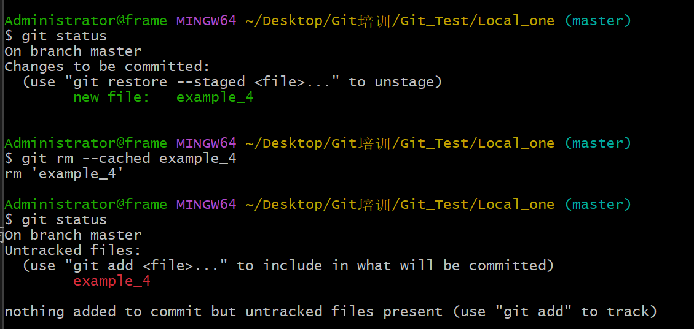
2.14 移动文件
git mv
例，把README.md 改名为README
git mv README.md README

2.15 Git别名
git config --global alias.short_name full_name
例:
-
git st
git config --global alias.st status
git st
-
git unstage
git config --global alias.unstage 'reset --hard'
git unstage <==> git reset --hard
-
删除别名
git config --global --unset alias.st
2.16 远程仓库的使用
2.16.1 创建本地远程仓库
创建如下的目录结构

其中，
Git_Remote: 为本地远程仓库
Local_one 和 Local_two，用于模拟多用户操作
- 在 Git_Remote 中
git init
进入 .git/hooks目录
将post-update.sample 文件 改名为 post-update
- 在 post-update中，
unset GIT_DIR
cd ..
git reset --hard

好了，至此本地远程仓库创建完毕。
2.16.2 远程仓库的使用
- 显示远程仓库
- git remote
列出每个远程仓库的简短名称 - git remote -v
会显示出Git存储的每个远程仓库对应的URL
- git remote
- 添加远程仓库
git remote add [shortname] [url]

-
从远程仓库拉取数据
git pull [remote-name] [branch-name]
或者
git fetch [remote-name] [branch-name]
+
git merge [remote-name]/[branch-name] -
将数据推送到远程仓库
git push [remote-name] [branch-name]
例，

git config --global receive.denyCurrentBranch ignore

2.16.3 冲突的处理
- 制造冲突
- 第一步，在Local_two中修改某一文件
- 第二步，提交并推送到远程仓库
- 第三步，在Local_one中对同一文件进行修改并提交
- 第四步，从远程仓库拉取更新
例，
Local_two
vi example_1
git add example_1
git commit -m 'modify example_1 -- user2'
git push origin master
Local_one
vi example_1
git add example_1
git commit -m 'modify example_2 -- user1'
git fetch origin master
git merge origin/master
- 解决冲突


解决完冲突后
git add example_1
git commit -m 'resolve conflict'
冲突解决完毕
2.16.4 删除和重命名远程仓库
(都是本地操作)
- 检查远程仓库
git remote show [remote-name] - 重命名远程仓库
git remote rename [origin-name] [new-name]
删除远程仓库
git remote rm [remote-name]

3 Git分支
3.1 分支简述
分支意味着偏离开发主线并继续你自己的工作而不影响主线开发
3.2 Git和SVN比较
Git 创建分支是新建指向某次提交的指针，而SVN新建分支则是拷贝目录，这个特性使得Git的分支切换非常迅速，且成本低
3.3 分支操作
3.3.1 查看分支
- git branch
查看所有本地分支
其中星号显示的是当前所在的分支

- git branch -r
查看所有远程分支

- git branch -a
查看所有本地分支和远程分支

- git branch -v
简要的显示SHA-1检验和 以及 提交信息

3.3.2 创建分支
- git branch <branch-name>
HEAD: 指向当前所在分支的指针
新建分支前:

新建testing分支:
git branch testing
新建分支后:

3.3.3 切换分支
- git checkout <branch-name>
切换至testing分支
git checkout testing

3.3.4 创建并切换分支
- git checkout -b [branch-name]
git checkout -b
等价于
git branch + git checkout
3.3.5 重命名本地分支
- git branch -m <old_branch_name> <new_branch_name>
3.3.6 删除本地分支
- git branch -d <branch-name>
3.4 基本的分支与合并操作
一个简单的分支与合并案例，其工作流可供日常开发借鉴
- 在项目展开工作
- 为新需求创建
feature分支 - 在
feature分支上展开工作
这时，突然有一个紧急的bug需要立即修复，随后需要这样做:
- 切换到生产环境(
master分支) - 创建
bug_fix分支来进行此次问题的修复工作 - 待测试通过后，合并修补分支并推送到环境中(
master分支) - 切换回之前的
feature分支上继续新需求开发工作
3.4.1 实际案例
-
初始状态
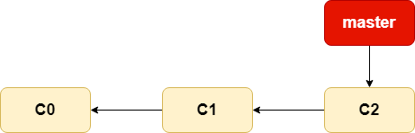 -
step1 - 为新需求创建
feature分支并进行开发git checkout -b feature
或者
git branch feature
git checkout feature
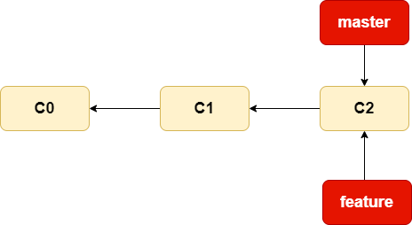
- step2 - 在feature上进行新需求开发工作，并进行提交
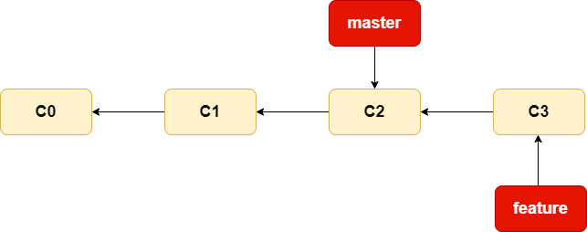
- step3 - 有一个紧急bug需要立即修复
- 切换回
master分支 - 创建
bug_fix分支，展开bug修复工作
git checkout master
git branch bug_fix
git checkout bug_fix - 切换回
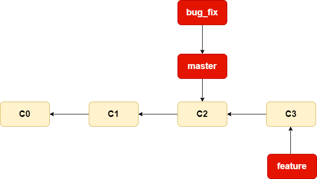
- step4 - 修复完成后，并进行提交
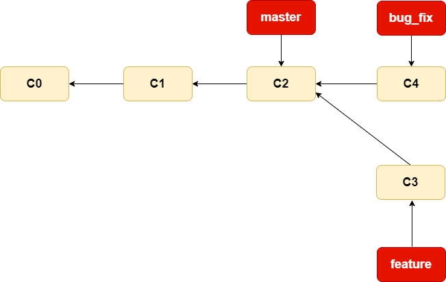
- step5 - 将
bug_fix分支合并到master分支git checkout master
git merge bug_fix
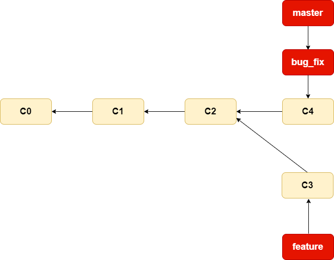
- step6 - 删除
bug_fix分支git branch -d bug_fix
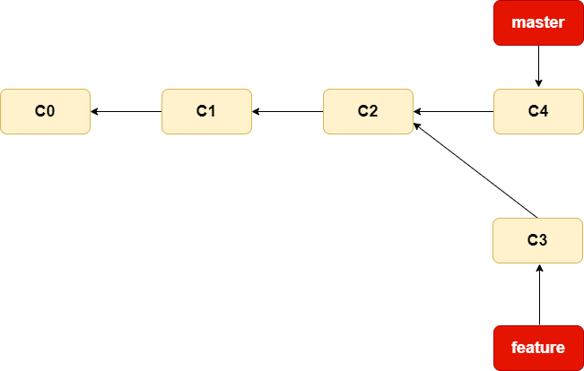
- step7 - 切换回
feature分支,继续之前未完成的需求
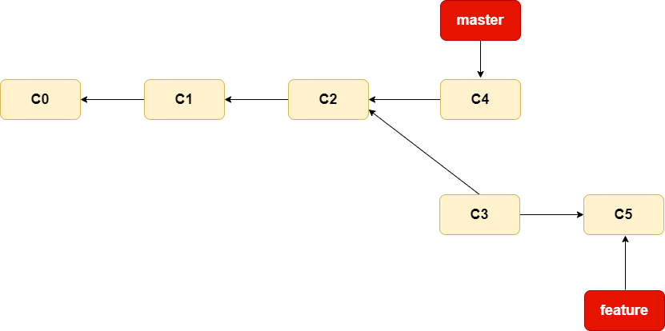
- step8 - 新需求开发完毕，将新需求合并到
master分支
重点: 三方合并，以共同祖先C2为基础节点
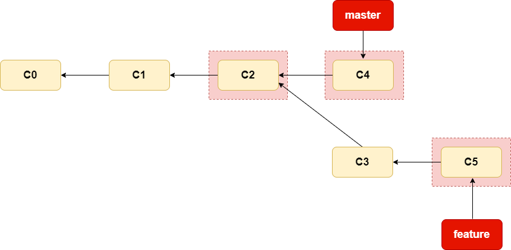
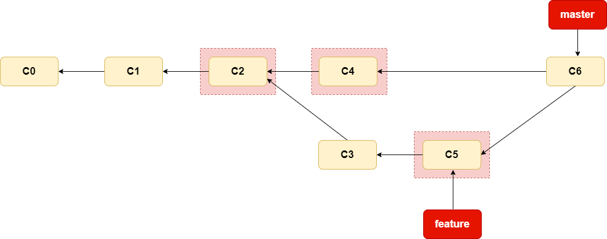
- step9 - 删除
feature分支git branch -d feature
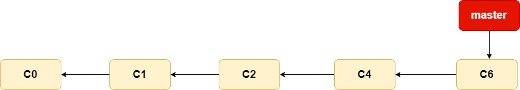
3.5 上述案例中涉及到的重要知识点
3.5.1 合并分支操作
- git merge <branch-name>
例，将分支B合并到分支A的步骤:
先分支B切换到分支A
git checkout A
在分支A上执行git merge命令
git merge B
3.5.2 分支合并的两种模式
- 方式一: 快进合并(fast-forward)
合并前

由于当前所在的master分支所指向的提交是要并入bug_fix分支的直接上游，因而Git会将master分支指针向前移动。换句话说，当你试图去合并两个不同的提交，而顺着其中一个提交历史可以直接到达另一个提交时，Git会简化合并操作，直接把分支指针向前移动，因为这种单线历史不存在有分歧的工作，这就叫做fast-forword
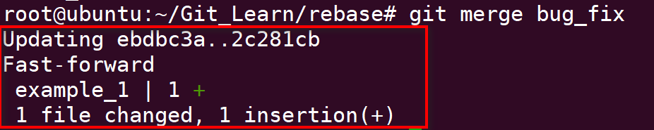
合并后
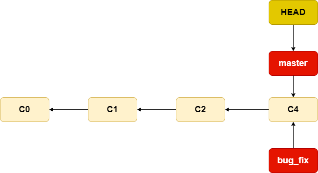
- 方式二: 三方合并
这次合并看起来与之前bug_fix的合并有点不一样。在这次合并中，开发历史从某个早先的时间点开始有了分叉。由于当前master分支指向的提交并不是feature分支的直接祖先，因而Git必须要做一些额外，即 三方合并。三方合并操作会使用两个待合并分支上最新提交的快照，以及这两个分支的共同祖先的提交快照。
与之前简单的向前移动分支指针的做法不同，这一次Git会基于三方合并的结果创建新的快照，然后再创建一个提交指向新建的快照。这个提交叫做合并提交。合并提交的特殊性在于它拥有不止一个父提交。值得注意的是，Git会自己判断最优的共同祖先并将其作为合并基础。
3.5.3 合并冲突的解决
在三方合并的过程中不可避免的会遇到冲突等问题。
下面介绍一下遇到冲突了该如何解决:
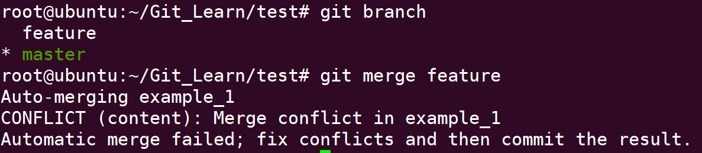
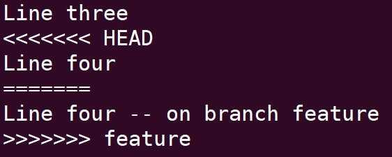
手动解决冲突, 然后 git add 告诉Git冲突已经解决, 最后git commit 即可。
使用git log --graph --oneline 查看提交历史，可以以图形化的方式查看到分叉，以及三方合并的过程
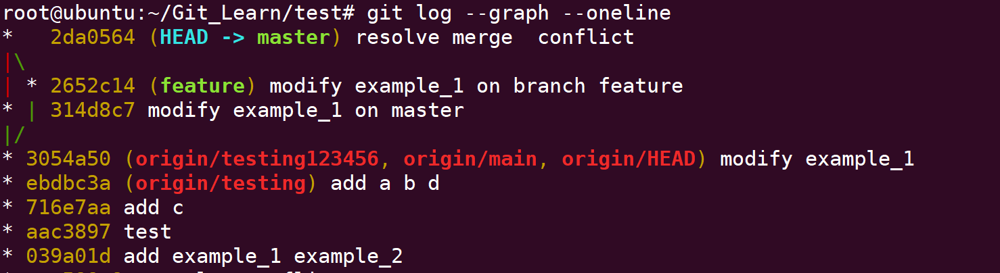
3.6 查看已合并以及未合并分支
-
查看哪些分支已经并入当前分支
git branch --merged -
查看包含尚未合并工作的所有分支
git branch --no-merged
3.7 远程分支
3.7.1 远程分支介绍
远程分支是指向远程仓库的分支的指针，这些指针存在于本地且无法移动。当你与服务器进行任何网络通信时，它们会自动更新。远程分支有点像书签，它们会提示你上一次连接服务器时远程仓库中每个分支的位置。
远程分支的表示形式为: <remote-name>/<branch-name>
3.7.2 跟踪/不跟踪远程分支
- 创建新的分支跟踪远程分支
-
新建同名分支跟踪远程分支
git checkout --track <remote-name>/<branch-name> -
新建任意名称分支跟踪远程分支
git checkout -b branch-name <remote-name>/<branch-name>
- 使已存在分支跟踪/不跟踪远程分支
- 跟踪远程分支
git branch -u <remote-name>/<branch-name>
或者
git branch --set-upstream-to <remote-name>/<branch-name>
例，使当前分支跟踪远程的master分支
git branch -u origin/master
- 取消跟踪
git branch --unset-upstream
例，取消跟踪远程master分支
git branch --unset-upstream
- 查看具体跟踪的分支
git branch -vv
3.7.3 git pull 与 远程分支
- 没有跟踪分支时
-
git pull <remote> <remote-branch>:<local-branch>
场景: 当本地分支不是local-branch
作用: 将远程分支拉取到本地分支例如，当前是master分支，但是你想把远程的master分支同步到本地testing，但又不想使用checkout切换分支时
git pull origin master:testing -
git pull <remote> <remote-branch>
场景: 在当前分支上进行同步操作
作用: 将指定远程分支同步到当前本地分支例如，使用远程的master分支同步当前分支
git pull origin master -
已经跟踪分支时
git pull
-
3.7.4 git push 与远程分支
- 没有跟踪分支时
-
git push <remote> <local-branch>:<remote-branch>
将本地local-branch分支的数据推送到远程的remote-branch分支 -
git push <remote> <remote-branch>
本地分支与远程分支同名，使用本地分支更新远程分支例， git push origin serverfix
上述命令是一个简化的写法。Git会自动把分支名称serverfix扩展为refs/heads/serverfix:refs/heads/serverfix
上述操作的含义是：“把本地的serverfix分支推送到远程的serverfix分支上，以更新远程数据”。一般情况下可以省略不写这部分，也就是说你可以执行git push origin serverfix:serverfix,这条命令可以达到与之前的命令一样的效果。
-
- 已经跟踪分支时
git push
3.7.5 删除远程分支
- 通过Web
- 通过命令行
- git push <remote> :<remote-branch>
- git push --delete <remote> <remote-branch>
- git push <remote> --delete <remote-branch>
例，删除远程origin仓库的testing分支
git push origin :testing
git push --delete origin testing
git push origin --delete testing
3.7.6 重命名远程分支
- 在本地以旧分支为基础创建新分支
- 推送到远程仓库
- 删除远程分支
例，将远程的test分支重命名为test1
git push origin test:test1
git push origin :test
4 变基
在Git中整合来自不同分支的修改主要有两种方法: merge以及rebase。在本节中将学习什么是“变基”，怎样使用“变基”，并将展示该操作的惊艳之处，以及指出在何种情况下应该避免使用它。
4.1 变基的基本操作
回顾之前分支合并的例子，开发任务分叉到两个不同的分支master和feature，又各自提交了更新。
之前介绍过，整合分支最容易的方法是merge命令，它会把两个分支的最新快照（C4和C5）以及二者最近的共同祖先（C2）进行三方合并，合并的结果是生成一个新的快照（并提交）。
其实，还有一种方法: 你可以提取C3和C5中引入的补丁和修改，然后在C4的基础上应用一次。在Git中，这种操作就叫做变基（rebase）。你可以使用rebase命令将提交到某一分支上的所有修改都移至另一个分支，就好像“重新播放”一样。
在这个例子中，可以先检出feature分支，然后将它变基到master分支上:
$ git checkout feature
$ git rebase master
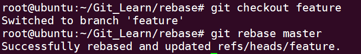
它的原理是首先找到这两个分支（即当前分支feature、变基操作的目标基底分支master）的最近共同祖先C2，然后对比当前分支相对于该祖先的历次提交，提取相应的修改并存为临时文件，然后将当前分支指向目标基底C4，最后以此将之前另存为临时文件的修改依序应用。
变基产生的新节点相对于原节点来说，作者，日期，提交信息都不会改变
只有commit-id发生变化
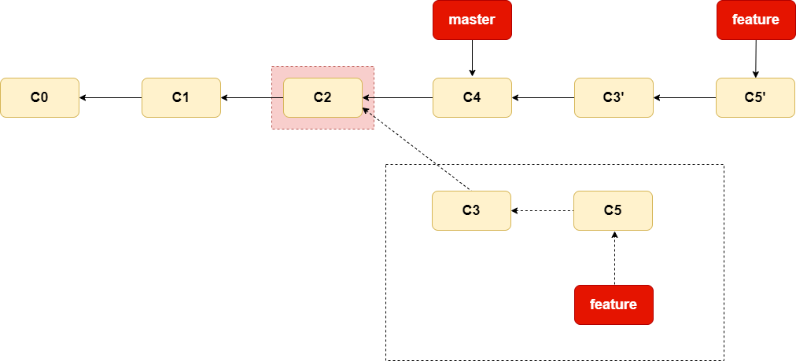
现在回到master分支，进行一次快进合并。
git checkout master
git merge feature
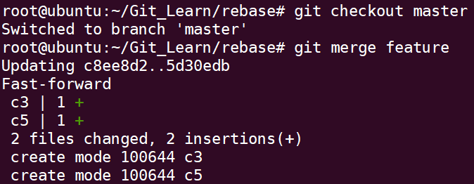
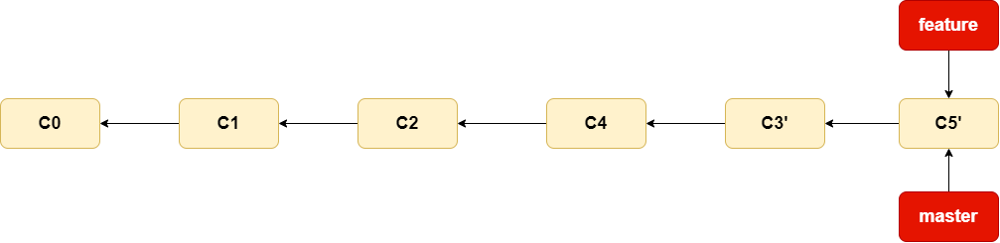
此时，C5'指向的快照就和上述三方合并中C6指向的快照一模一样了。这两种整合方法的最终结果没有任何区别，但是变基使得提交历史更加整洁。在查看一个经过变基的分支的历史记录时会发现，尽管实际的开发是并行的，但它们看上去就像是串行的一样，提交历史是一条直线没有分叉。
一般我们这样做的目的是为了确保在向远程分支推送时能保持提交历史的整洁--例如向某个他人维护的项目贡献代码时。在这种情况下，你首先在自己的分支里进行开发，当开发完成时你需要先将你的代码变基到origin/master上，然后再向主项目提交修改。这样的话，该项目的维护者就不再需要进行整合工作，只需要快进合并便可。
4.2 更有趣的变基例子
演示仓库地址： https://gitea.peerblack.cn/cz/rebase_three.git
在对两个分支进行变基时，所生成的“重放”并不一定要在目标分支上应用，也可以指定另外的一个分支进行应用。
假设有下面的一个案例，
- 首先基于
master创建了主题分支toptic_one,提交了C3和C4 - 然后从
C3上创建了主题分支topic_two，添加了一些功能，提交了C8和C9 - 最后，回到
topic_one分支，又提交了C10
整个提交历史如下所示:
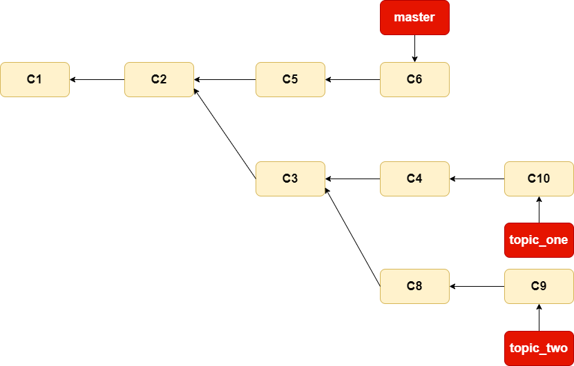
假设你希望将topic_two中的修改合并到主分支并发布，但暂时并不想合并topic_one中的修改，因为它们还需要经过更全面的测试。这时，你就可以使用git rebase命令的--onto选项，选中在topic_two分支里但不在topic_one分支里的修改（即C8和C9），将它们在master分支上重放:
git rebase --onto master topic_one topic_two
以上命令的意思是：“取出topic_two分支，找出它从topic_one分支分歧之后的补丁，然后把这些补丁在master分支上重放一遍，让topic_two看起来像是直接基于master修改一样”。
变基后的效果图如下所示:
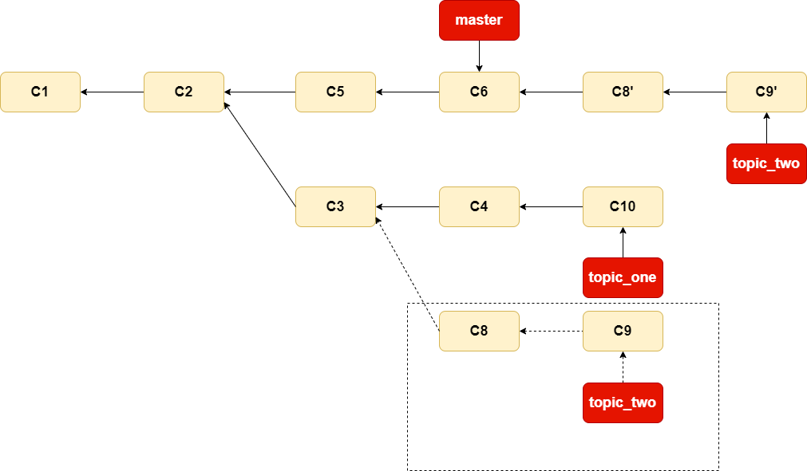
现在可以快进合并master分支了。
git checkout master
git merge topic_two
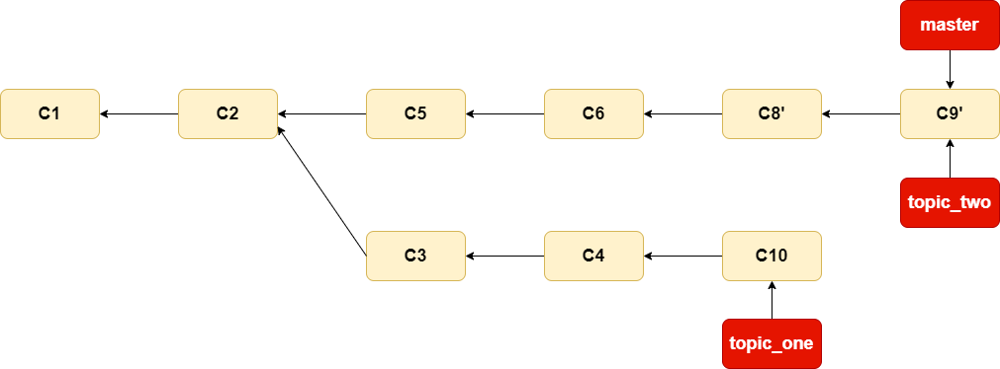
接下来你决定将topic_one分支中的修改也整和进来。使用git rebase <base-branch> <topic-branch>命令可以直接将主题分支（即topic_one分支）变基到目标分支（即master分支）上。这样做能省去先切换到topic_one分支，再对其执行变基命令的多个步骤。
git rebase master topic_one
如图，将topic_one中的修改变基到master上，topic_one中的代码被“续”到了master后面。
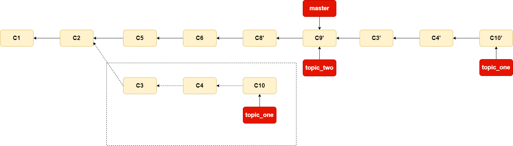
然后就可以快进合并到主分支master了:
git checkout master
git merge topic_one
至此，topic_one分支和topic_two分支中的修改都已经整合到master分支里了，可以删除这两个分支，最终的提交历史如下图所示:
git branch -d topic_one
git branch -d topic_two
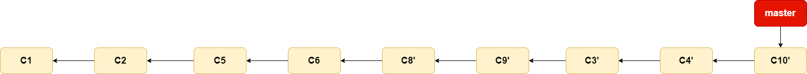
Q1: 能否变基到远程分支，如 origin/master
A: 将本地的C3提交变基到远程分支origin/master
- 方法一:
git fetch origin master
git rebase origin/master
- 方法二:
git pull --rebase
变基后的结果:
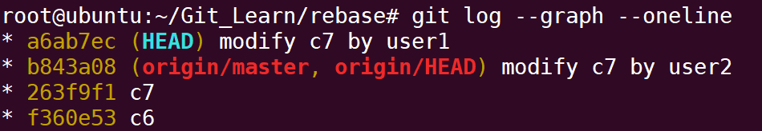
直接git pull (mege)的结果:
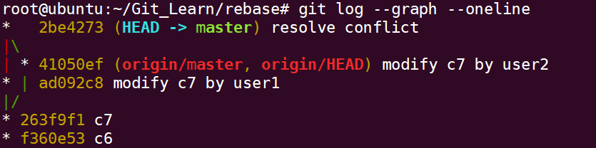
可以手动配置git pull的默认选项
hint: git config pull.rebase false # merge
hint: git config pull.rebase true # rebase
hint: git config pull.ff only # fast-forward only
也可以显示指明
git pull --no-rebase # merge
git pull --rebase # rebase
Q2: 如何从指定分支的指定提交(commit-id)创建分支
A: 在git branch的后面指定分支名即可
git branch 新分支名 commit-id
git branch <new_branch_name> <commit_id>
5 Git工具
5.1 git stash
有时，当你在项目已经工作一段时间后，所有的东西都进入了混乱的状态，而这时你想要切换到另一个分支做一点别的事情。问题是，你不想仅仅为只做了一半的工作创建一次提交，针对这个问题可以使用git stash命令。
贮藏（stash）会处理工作目录的脏的状态--即跟踪文件的修改与暂存的改动--然后将未完成的修改保存到一个栈上，而你可以在任何时候重新应用这些改动（甚至在不同的分支上）。
贮藏工作
- step1 进入项目并改动几个文件，然后使用
git status查看改动的状态
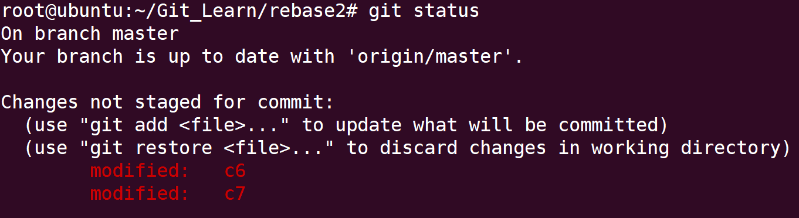
- step2 现在想要切换分支，但是还不想提交未完成的工作；可以贮藏修改，将新的贮藏推送到栈上。运行
git stash或git stash save <message>:
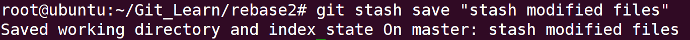
使用git status查看工作区状态，可以发现此时的工作区已经干净了
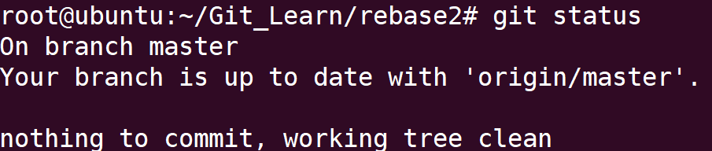
- step3 此时就可以正常的进行分支切换等工作了；你的修改被存储在栈上，运行
git stash list可以查看被暂存的修改:
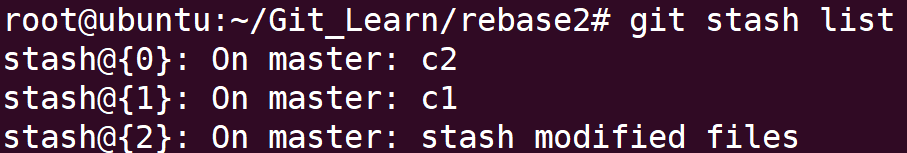
注: 遵循栈的First in Last out原则，最新一次的贮藏在栈顶
如果想查看某一次贮藏的改动，可以使用git stash show <stash>命令
例如，想查看第二次贮藏的改动:
git stash show stash@{1}
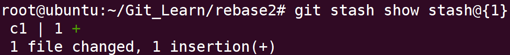
如果想查看贮藏的详细内容，加上-p选项即可。
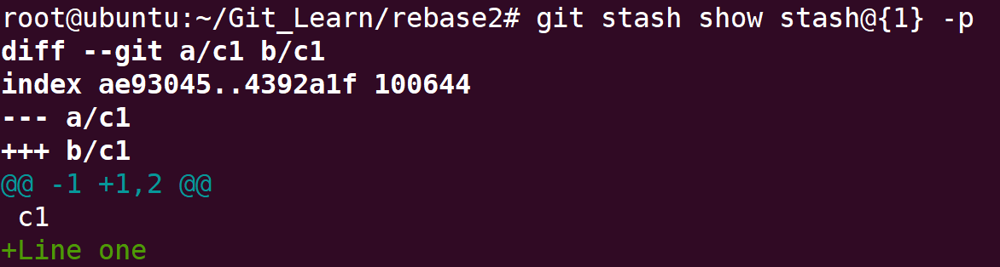
- step4 应用贮藏
-
git stash apply
应用某个贮藏，但不会把该贮藏从存储列表中删除，默认使用第一个存储，即stash@{0}，如果要使用其它的贮藏，需要使用命令git stash apply stash@{$num}显示指明。
比如应用第二个贮藏：git stash apply stash@{1}
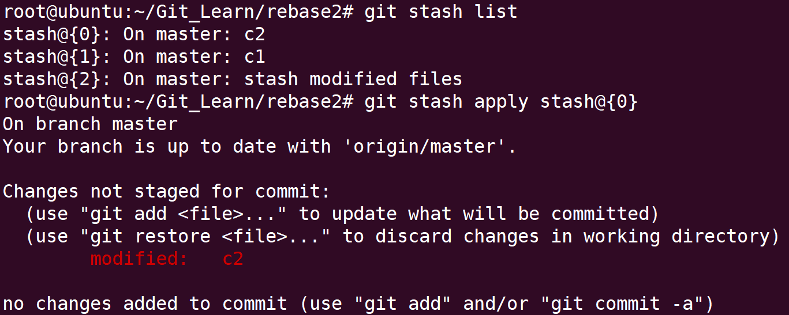 -
git stash pop
应用贮藏然后立即从栈上扔掉它，默认为第一个stash，即stash@{0}，如果要应用并删除其它的贮藏，需要使用命令:git stash pop stash@{$num}。
比如应用并删除第二个贮藏：git stash pop stash@{1}
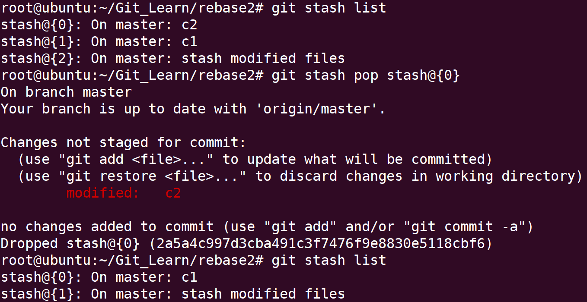
-
stash命令扩展:
-
丢弃某次贮藏
git stash drop <stash> -
删除所有贮藏
git stash clear
5.2 git commit --amend
撤销上一次的提交，（撤销提交内容 或者 撤销提交描述）
注意: 时间不会变，但是 commit id 会改变
5.3 git reset
将当前HEAD复位到指定状态，一般用于撤销之前的一些操作。
git commit的--amend选项只能撤销最近的一次提交，而git reset可以撤销多次提交。
git reset有三种模式，分别为:- --hard
- --soft
- --mixed
reset --hard重置工作目录和暂存区
reset --hard会重置HEAD和branch的同时，重置工作目录和暂存区里的内容。当你在reset后面加了--hard参数时，你的工作目录和暂存区里的内容会被重置为HEAD当前指向节点相同的内容。换句话说，就是你没有提交的修改(工作目录+暂存区)都会被擦除掉。
例如，同时修改了C1和C2两个文件，将C1加入暂存区，C2保留在工作目录:
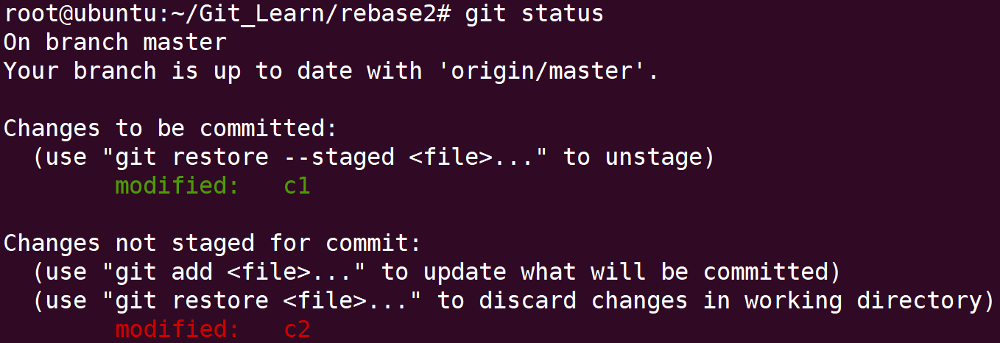
扩展:
HEAD - 当前提交
HEAD^ - 当前提交的父提交
HEAD^^ - 当前提交的前两次提交
...
依次类推
然后执行了git reset并附带上--hard参数
git reset HEAD^ --hard
HEAD指针和当前分支branch向前移动一个提交节点的同时，工作目录和暂存区的改动也一同消失了:
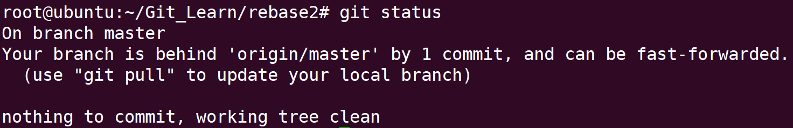
可以看到，在reset --hard之后，所有的改动都被擦掉了。
reset --soft保留工作目录和暂存区，并把重置HEAD所带来的差异放入暂存区
reset --soft会在重置HEAD和当前分支branch时，保留工作目录和暂存区中的内容，并把重置HEAD所带来的差异放入暂存区。
Q: 什么是“重置HEAD所带来的差异”?
A: 参考以下的提交历史，

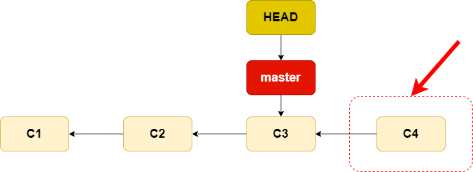
由于HEAD指针从C4节点回退到了C3节点，C4节点相对于C3节点的改动就是“重置HEAD所带来的差异”。
例如，当前HEAD指针指向C4节点，暂存区里面有一个名为staged.files的文件，工作目录中有一个名为work.files的文件，C4节点相对于C3节点提交了一个名为commit.files的文件。
先使用git status查看当前工作目录和暂存区状态
git status
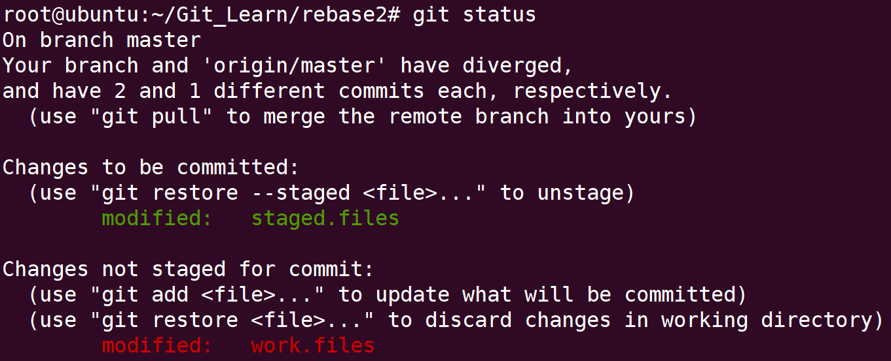
假设当前的提交的改动内容是新增了commit.files文件
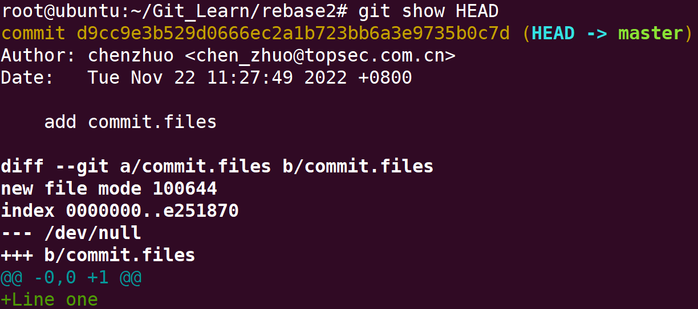
如果此时执行git reset --soft HEAD^
git reset --soft HEAD^
那么除了HEAD指针和branch分支会向前移动的同时，C4节点相对于C3节点所新增的commit.files文件也会被移动到暂存区:
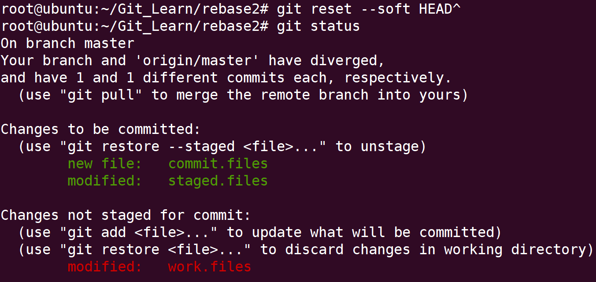
这就是--soft和--hard的区别: --hard会清空工作目录和暂存区的改动，而--soft则会保留工作目录和暂存区的内容，并把重置HEAD所带来的差异放入暂存区。
reset --mixed（不加参数默认为mixed）
保留工作目录，清空暂存区，同时将暂存区的内容和重置HEAD所带来的差异放到工作目录。简而言之，就是[把所有差异都混合（mixed）放在工作目录中]。
同样还是以上述例子来进行说明：
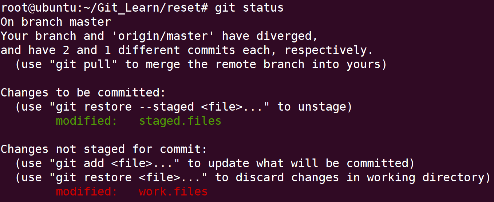
工作目录中有一个名为work.files的文件，
暂存区中有一个名为staged.files的文件
最新一次的提交新增一个名为commit.files的文件
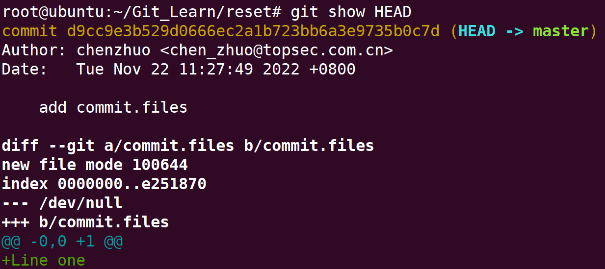
执行无参数或者带--mixed参数的reset命令
git reset HEAD^
git reset --mixed HEAD^
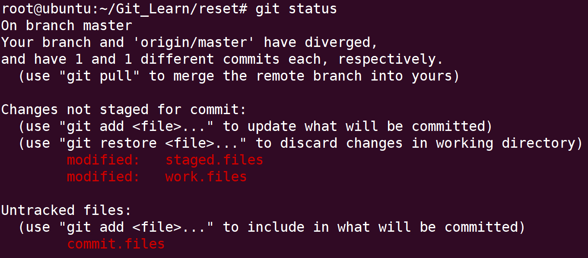
工作目录的内容和--soft一样都会被保留，但和--soft的区别在于，它会把暂存区清空，并把原节点和reset节点的差异文件放在工作目录。总而言之，就是工作目录，暂存区的内容以及[重置reset所带来的差异都会被放进工作目录]。
5.4 git 如何生成patch 和 打入patch
生成patch有两种形似:
- git format-patch 生成的patch文件
- git diff生成的diff文件
差异：
合入git format-patch生成的patch文件会产生相应的提交历史
而合入diff文件需要手动commit
5.4.1. patch文件
- 生成patch文件
- 生成某次提交的patch
git format-patch -1 <commit-id> - 生成某次提交前n次的patch（包含本次提交）
git format-patch -n <commit-id> - 生成某两次提交之前的patch
git format-patch <base commit-id>..<latest commit-id>
生成的patch文件不包含<base commit-id>对应的提交，但是包含<latest commit-id>对应的提交。
即(<base commit-id>, <latest commit-id>]，是个左开右闭区间 - 生成从根节点到某次提交的所有patch（包含本次提交）
git format-patch --root <commit-id> - 生成某次提交至最近一次提交的patch（不包含本次提交）
git format-patch <commit-id> - 生成当前分支超前另一分支的patch
git format-patch -M <branch-name>
例如，生成当前分支超前master的patch
git format-patch -M master
- 生成某次提交的patch
- 查看patch状态
git apply --statpatch-file - 检查patch是否可以打上，如果没有任何输出，则说明无冲突，可以打上
git apply --checkpatch-file - 应用patch
git ampatch-file
遇见了冲突该如何解决？
git ampatch-file
提示有错误，可以先手工apply
git apply --rejectpatch-file
会先合并没有冲突的部分，剩下的会做标记，生成*.rej，对照着*.rej可以看到具体冲突的地方，并对文件进行修改，修改完成后直接把*.rej删除掉即可。
把冲突的文件 git add到暂存区
最后 git am --comtinue
或者
git am --resolved 会产生一个提交
（user_name, user_email, author, message都与patch一致）
git am的几个选项:
- git am --continue
告诉Git已经解决此次冲突
- git am --skip
告诉Git跳过次patch，继续合入下一patch
- git am --abort
告诉Git停止合入patch的动作，并将分支恢复至合入patch的初始状态
5.4.2 diff文件
-
生成diff文件
- git diff <commit-id1> <commit-id2> >
diff文件
生成 commit-id1和commit-id两个提交之间的差异，并存入diff文件
扩展: 如何获取Git仓库中的第一个节点？
git log --reverse
可以倒序显示提交节点-
如何想查看某个具体文件的改动，只需加上文件名即可
git diff <commit-id1>:file <commit-id2>:file >diff文件 -
git diff >
diff文件
将工作区的修改生成patch文件 -
git diff --cached >
diff文件
将暂存区修改生成patch文件
- git diff <commit-id1> <commit-id2> >
-
查看patch状态
git apply --statdiff文件 -
检查patch是否可以打上，如果没有任何输出，则说明无冲突，可以打上
git apply --checkpatch文件 -
应用diff文件
git applydiff文件
如果有冲突，应用失败该怎么办？
首先使用git apply --rejectdiff文件
会先合并没有冲突的部分，剩下的会做标记，生成*.rej，对照着*.rej可以看到具体冲突的地方，并对文件进行修改，修改完成后直接把*.rej删除掉即可。
然后把冲突文件添加到暂存区，提交即可。
第一期 遗留问题
1. git commit --amend操作，时间是否会改变?
git commit --amend
撤销上一次的提交，（撤销提交内容 或者 撤销提交描述）
注: 时间不会变，但是 commit id 会改变
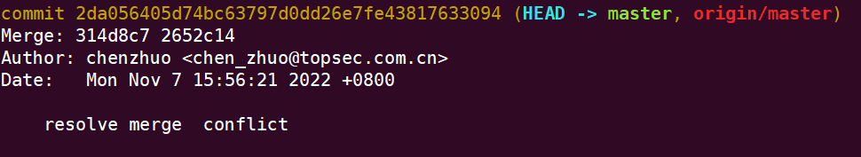
git commit --amend
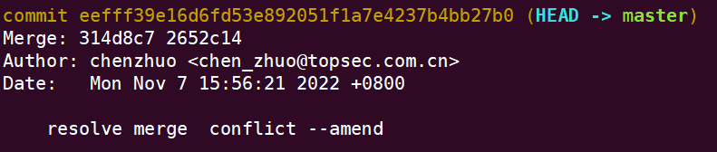
2. 合并非连续提交?
git rebase 变基
git rebase -i
- 合并非连续提交之前
创建 4 个文件
vi a
git add a
git commit -m 'add a'
...
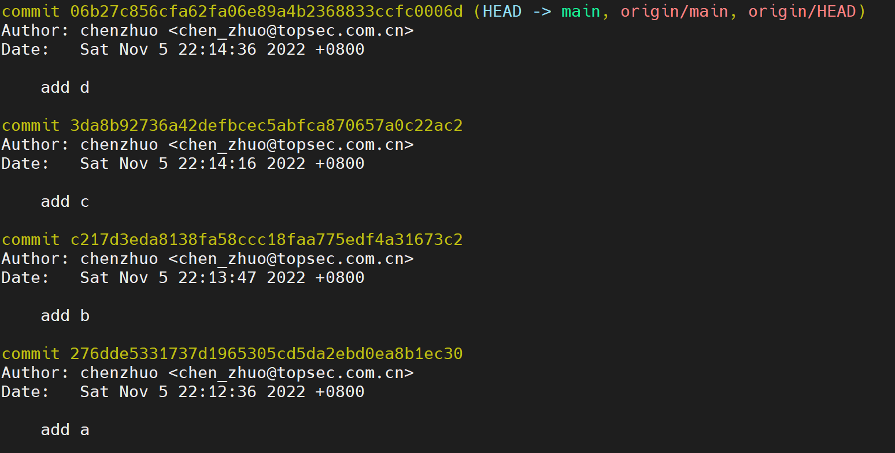
-
合并 a b d 三次提交至一个新的提交
合并前的流程图

合并后的流程图

-
git rebase -i 父提交
注意: 如果你想改变最近4次或其中任意一次的提交消息，需要将待修改的最近一次提交的父提交作为参数提供给git rebase -i，我们将1之前的提交的commit id提供给git rebase -i
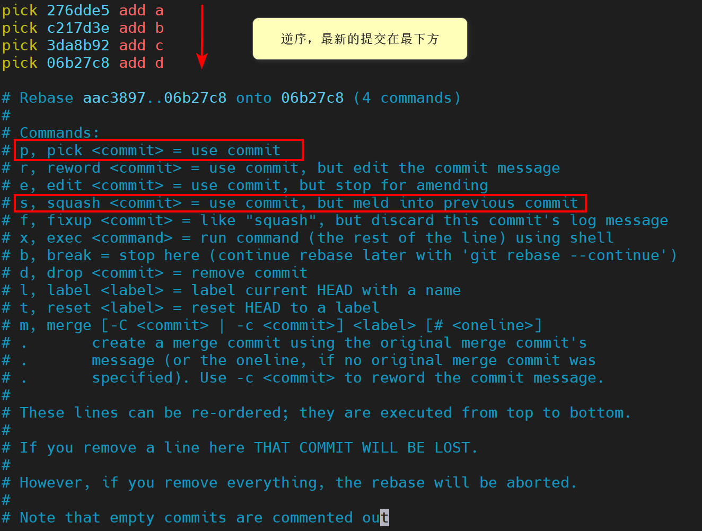
注意: 显示的提交为倒序，旧的提交在上方，新的提交在下方。
格式:
关键字 commit-id commit-message
几个重要的关键字如下所示:
p, pick
= use commit
r, reword= use commit, but edit the commit message
e, edit= use commit, but stop for amending
s, squash= use commit, but meld into previous commit
These lines can be re-ordered; they are executed from top to bottom.
If you remove a line here THAT COMMIT WILL BE LOST.
squash /skwɑːʃ/
v.压扁，压碎；（使）挤进，（把……）塞进；打断，制止，去除；控制，抑制（情绪）
meld /meld/
vi.合并；混合
选择要保留和要合并的commit
保存并退出
修改提交message
合并完成后
注意: 提交时间不变，但是commit-id会全部改变
- 如果遇到冲突后该如何解决?
第一步，解决冲突
第二步，git add xxx
第三步，继续rebase , 执行 git rebase --continue
...
如果想放弃，可使用
git rebase --abort
或者
git rebase --skip
- 推送到远程分支?
需要 git push -f 才行 （非常不推荐rebase非本地分支的内容）
git push -f [remote] [branch]
3. 如何合并中间的某几个节点?
方法同上
4. 如何从提交log中进行关键字查找?
- 查找关键字
git log --grep key_word - 查找关键字，并指定作者
git log --grep key_word --author author
git log 常用扩展
- 查找指定函数的变更记录
git log -L :<funcname>:<file>
例，寻找main.cpp文件中 add 函数的变更记录
git log -L :add:main.cpp